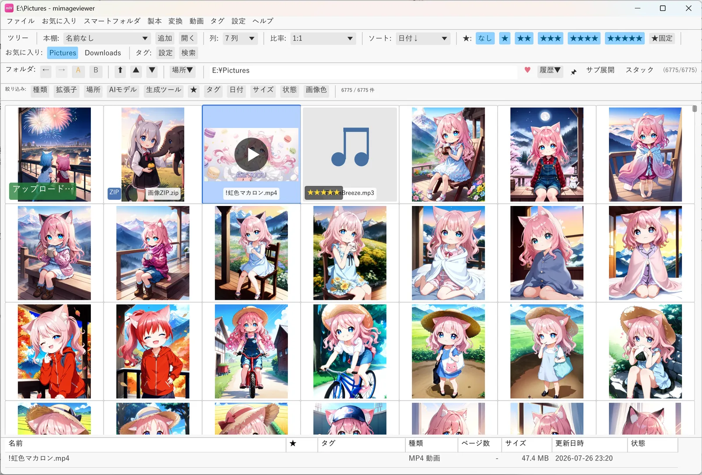

mImageViewer は、フォルダを開くと中の画像・動画・ZIP・PDF をサムネイルで一覧します。時間のかかるサムネイル作りは、画面に見えている分から先に進めます。フォルダの中のファイル一覧を読む時間は件数に応じて増えますが、数万枚のフォルダでも、全部のサムネイルがそろうのを待たずに見始められます。このページでは、そのしくみと、計測した表示時間を紹介します。

6,775 件のファイルが入ったフォルダを一覧しているところ。
速さを支える 5 つのしくみ
1. 見えている分だけを描く
一覧全体をいちどに描くのではなく、画面に見えている行だけをそのつど描きます（仮想スクロール）。一覧の長さに合わせたスクロール範囲は確保しておき、スクロールした先の行をその場で描くので、ファイル数が増えても描画の重さは変わりません。
2. 見えている範囲から先にサムネイルを作る
サムネイルは、画面に見えている分を最優先で作り、そのあとで前後の分を先回りして作ります。スクロールしている間は先回りを控え、止まった位置のサムネイルに処理を集中させます。別のフォルダへ移ると、前のフォルダの処理は打ち切ります。
3. 一度作ったサムネイルを保存しておく
作ったサムネイルのうち条件に合うものはキャッシュとして PC に保存し、同じフォルダを開き直したときは画像を読み直さずに表示します。既定の「Auto」では、読み込みに時間のかかる画像（25 ms 以上、または 2 MB 以上）と、WebP・PDF・ZIP を保存し、軽い画像は保存せずにその都度作ります。よく開くフォルダは、お気に入りから「サムネを一括作成…」で先回りして作っておくこともできます（チュートリアル「サムネイルキャッシュで高速表示」）。
4. 大きな写真は縮小しながら読む
カメラで撮った大きな JPEG は、サムネイルに必要な大きさまで縮小しながら読み込み、元の大きさで展開してから縮める手間を省きます。JPEG の読み込み自体にも、CPU の並列演算を使う高速なライブラリを使っています。
5. ZIP と PDF を展開せずに並列で処理する
ZIP の中の画像はディスクに展開せず、そのまま読み出します。PDF のページは複数の処理を同時に動かして描きます（同時に動かす数は環境設定で 3〜10、既定は 5。そのうち 1 つは、いま開こうとしているページのために空けておきます）。
計測した表示時間
102,627 件（PNG 画像 102,625 枚ほか）が入ったフォルダを HDD に置いて測りました。一覧は 5 列 × 4 行で、スクロールを止めてから画面の 20 枚が表示されるまでの時間です。それぞれ 3 回測り、いちばん速かった値を載せています。
| 場面 | 最初の 1 枚 | 画面の 20 枚すべて |
|---|---|---|
| 初めて見る画像（キャッシュなし、HDD から読む） | 0.23 秒 | 1.42 秒 |
| 2 回目以降（キャッシュあり） | 0.010 秒 | 0.020 秒 |
初めて見る画像は、1 枚ずつ HDD から読んで縮小するので 1 秒台かかります。作ったサムネイルは保存されるので、同じ場所を 2 回目以降に開くと、画面の 20 枚が 0.02 秒でそろいます。
このほか、フォルダを開くときには、中のファイルの一覧を読む時間がかかります。102,627 件のフォルダでは、Windows がまだフォルダの情報を読み込んでいない最初の 1 回が 45.5 秒、2 回目以降は 2.3 秒でした。件数が多いフォルダほど長くなります。
ほかにも待たせないための工夫
- 表示用のメモリは前後数ページ分だけ：画面から離れたサムネイルはメモリから外し、戻ってきたら読み直します。長い一覧を端から端まで見ても、メモリを使い続けることはありません。
- ファイルの追加・削除を自動で反映：ほかのアプリがフォルダにファイルを足したり消したりしても、手動で読み直す必要はありません。
- ウィンドウのサイズ変更中の見え方：画面全体をアプリがまとめて描いているため、ウィンドウの端をドラッグしている間だけ、中身が一瞬伸び縮みして見えることがあります（FAQ）。
無料でダウンロードできます。インストール不要の単体 exe 版・ポータブル版もあります。
使い始める前の疑問は FAQ（使い始める前に）、操作の詳細は オンラインマニュアル をご覧ください。